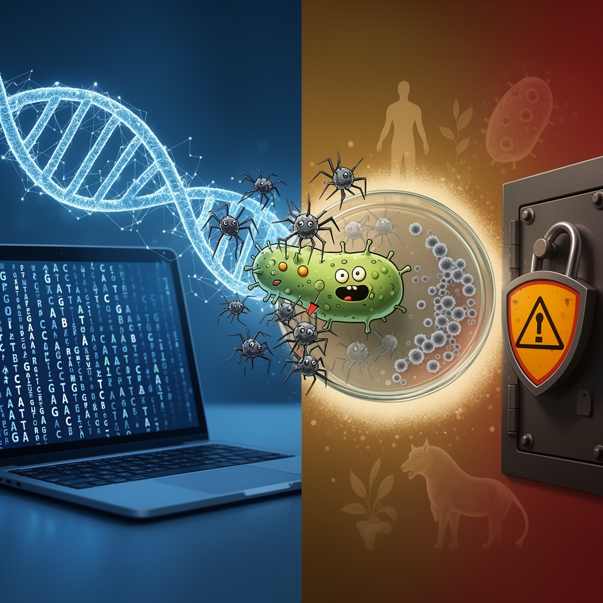

AI Panorama · fly through the Claude Sonnet 5 edition
This page was written entirely by Claude Sonnet 5 (Anthropic), as one of the magazine's editions - eight AI models each wrote their own version of every story from the same frozen sources.
The same story in other editions: GPT-5.6 Terra Gemini 3.7 Flash Grok 4.6 DeepSeek V4 Pro GLM 5.3 Qwen 3.8 Max Kimi K2.6
Stanford researchers used AI models called Evo to design 16 functional bacteriophages that killed drug-resistant E. coli, raising both hope and alarm.

Scientists at Stanford University and the Arc Institute have used artificial intelligence to design entire viral genomes from scratch, and shown that 16 of them work: they replicate, infect bacteria, and in lab tests killed strains of E. coli that had resisted natural viruses. It is the first time a whole genome has been designed by AI and shown to function, published Thursday in the journal Science.
The viruses are bacteriophages, a type that infects only specific bacteria and poses no danger to people. Doctors already use natural phages around the world to treat stubborn infections, and the new work points toward being able to design phages on demand, tuned to beat resistance as it evolves.
## How it was done
The AI models, called Evo1 and Evo2, work on a similar principle to the large language models behind chatbots like ChatGPT, except instead of predicting sequences of words, they predict sequences of genetic code. According to the BBC, they were trained on genetic material from viruses, bacteria, plants and people; the Guardian reports the phage-specific training set covered genetic data from two million bacteriophages, with genetic code for viruses that infect plants, humans or animals deliberately excluded to reduce risk.
The AI generated thousands of candidate genomes built to be hosted inside E. coli cells. Researchers picked the 302 most promising designs, synthesised them, and dropped them into bacteria to see what would happen. Only 16 turned out to be viable — a low hit rate, but a real one. Samuel King, a PhD student on the project, said the team realised their designs were working in the early hours of the morning, watching clear spots appear where the new phages ate through a dish of bacteria. When results were shared with the wider group, according to Brian Hie, an assistant professor at Stanford, "the room spontaneously burst into applause."
The payoff went beyond just working: CNN reports that a mixture of the new viruses overcame antibiotic resistance in some E. coli strains that a comparable mixture of naturally occurring phages could not. One of the designed genomes even carried a feature the researchers described as "evolutionarily distant" — a change natural evolution might have taken millions of years to arrive at.
## Why it matters, and why it worries people
Researchers and outside scientists agree this is a genuine turning point. Prof Marc Güell of Pompeu Fabra University called it a "very significant turning point" because, for the first time, biology is being designed on a computer rather than discovered in nature. Prof Patrick Cai of the Manchester Institute of Biotechnology said it suggests genome language models are starting to learn the design principles evolution itself uses.
But the same capability that can design a helpful phage could, in principle, be turned toward something harmful. In a commentary accompanying the study, Dr Thomas Inglesby and Dr Moritz Hanke of the Johns Hopkins Center for Health Security wrote that the ability to compose viral genomes with generative AI "now exists," while "the governance to safely steer it does not." They singled out genomes for pathogens that infect humans, animals or plants — such as those behind malaria or certain yeast infections — as work that "should not be pursued."
The Stanford team built in safeguards: they excluded genetic material for viruses that infect complex organisms from their training data, worked only on bacteria-infecting phages, and carried out the work in a secure lab. Jordi García Ojalvo of Pompeu Fabra University told the Science Media Centre the biosafety risk here is lower than with some other AI tools, since every designed genome still has to be built and tested individually, and the success rate is low — 16 viable viruses out of hundreds of thousands generated. "It is difficult to imagine these models automatically generating viable genomes 'out-of-the-box,'" he said.
Other scientists urged perspective rather than panic. Tom Ellis of Imperial College London called the achievement impressive but pointed out that a phage genome, at roughly 5,400 genetic letters, is tiny next to the smallest living cell's 500,000 or the human genome's three billion — "literally the smallest and easiest genome to make." He argued the bigger danger remains simpler: taking existing dangerous pathogens and modifying them, which is far easier than designing a genome from scratch. Dr Filippa Lentzos of King's College London said the most important point to control is where DNA gets physically manufactured, and called for layered safeguards spanning model access, research review, synthesis screening and standard lab biosafety — not regulation aimed at the AI model alone.
BacteriophageGenome language modelSynthetic biology
ai-biologybiosecuritysynthetic-biologybacteriophagesdrug-resistance